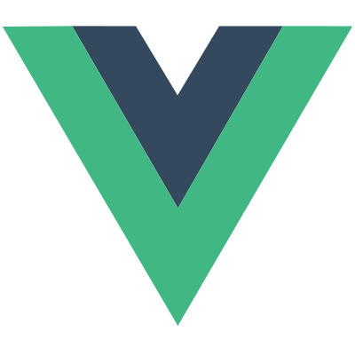
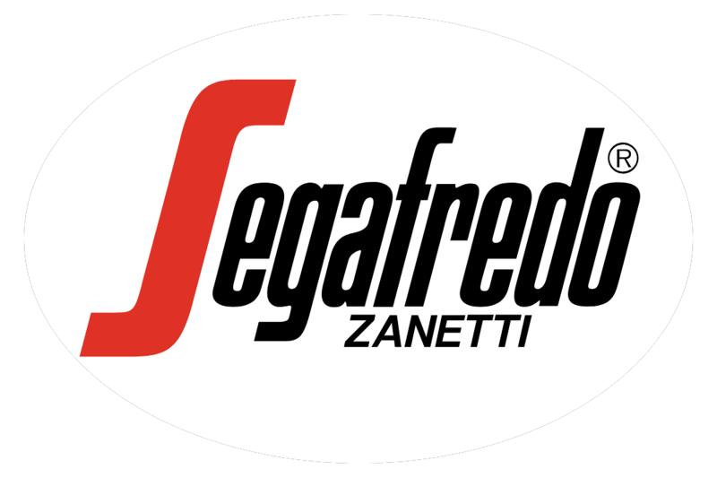
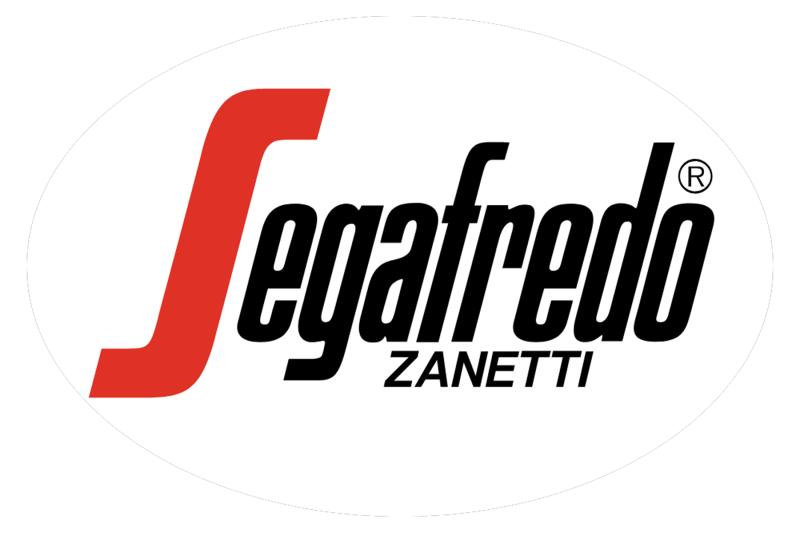
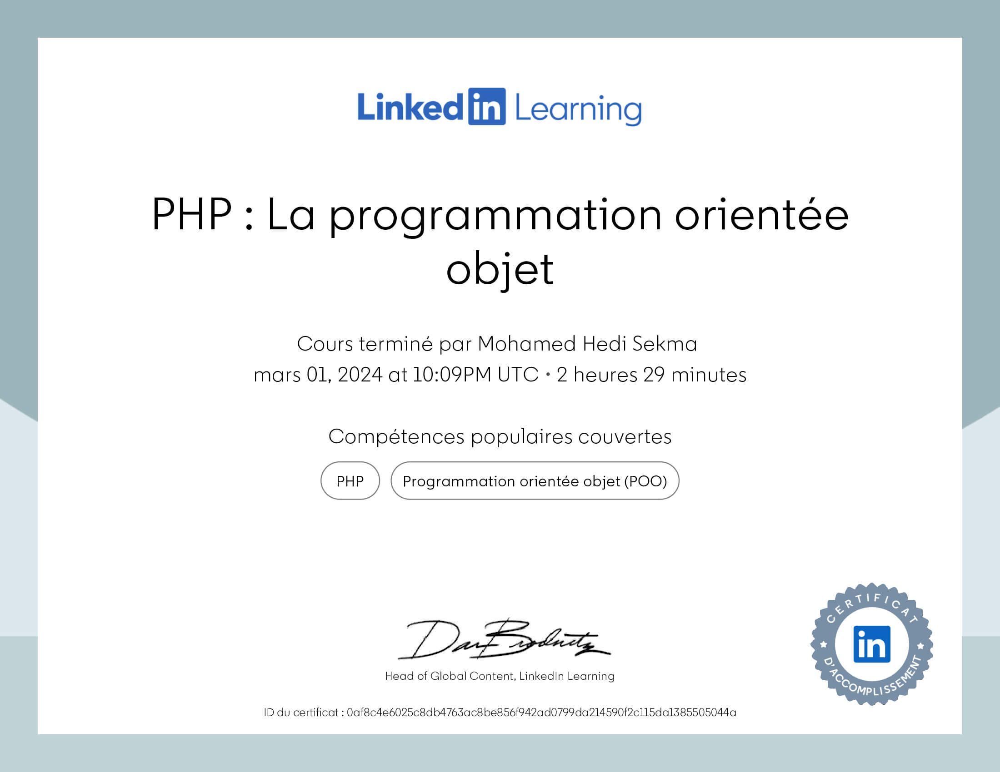

Compétences Techniques
Développement Frontend();


< Langages name="html, css, javascript, typescript"/>
<!-- Conception d’interfaces utilisateur modernes et interactives, garantissant une expérience fluide et optimisée. -->



< Frameworks et Bibliothèques name="vuejs, jquery, bootstrap, sass, chartjs"/>
<!-- Création d’applications dynamiques et interactives avec des visualisations avancées. -->
Développement Backend();
< Langages name="php"/>

/* Développement d’applications web dynamiques et performantes, avec une flexibilité permettant de répondre à divers besoins métiers. */
< Frameworks name="laravel"/>

/* Création d’applications sécurisées et évolutives, avec des fonctionnalités avancées comme la gestion d'API REST. */
< Bases de Données name="mysql"/>
/* Modélisation et gestion de bases de données relationnelles, assurant des performances élevées et une scalabilité adaptée aux besoins. */
Outils et Technologies();
< API et Tests name="postman"/>
/* Création, test et documentation d’API REST, garantissant leur fiabilité et leur performance. */
< Versionnement name="github"/>

/* Gestion efficace du code source et collaboration fluide en équipe. */
< Visualisations name="canva"/>

/* Développement d’éléments graphiques interactifs pour des expériences utilisateur personnalisées et engageantes. */
< Prototypage name="balsamiq"/>

/* Conception de wireframes clairs pour structurer les interfaces utilisateur, en simplifiant la planification des projets et la collaboration entre les équipes. */
< Environnements de développement name="vscode"/>
/* Productivité optimisée grâce à des extensions et une gestion structurée des projets. */
Soft Skills();
Esprit stratégique(){

Capacité à analyser des marchés, identifier des opportunités et concevoir des stratégies efficaces pour atteindre les objectifs commerciaux et techniques.
};
Relation client(){

Expertise dans la gestion de relations solides et durables avec les clients, en comprenant leurs besoins et en proposant des solutions sur mesure.
};
Collaboration et leadership(){

Expérience dans le travail en équipe et la coordination, avec une communication fluide et une capacité à motiver et guider les collaborateurs.
};
Adaptabilité(){

Habitude de naviguer entre des environnements complexes, en adoptant rapidement de nouvelles technologies et méthodes de travail.
};
Résolution de problèmes(){

Approche proactive pour surmonter les obstacles, qu’ils soient liés à la gestion des clients ou à la mise en œuvre de solutions technologiques.
};
Organisation et gestion du temps(){

Maîtrise des priorités et des délais, même dans des contextes exigeants, pour assurer la réussite des projets.
};
Expériences Professionnelles
Responsable commercial
(mai 2024 - aujourd’hui)

Entreprise: Société ZINA
Acivitée: Agro-alimentaire
Lieu: Nabeul, Tunisie
Freelancer
(janv 2024 - aujourd’hui)
Entreprise: Indépendant
Acivitée: Développement web
Lieu: Bizerte, Tunisie
Responsable commercial
(déc 2020 - mai 2024)

Entreprise: Société Pristine
Acivitée: Agro-alimentaire
Lieu: Zaghouan, Tunisie
Responsable commercial
(août 2016 - nov 2020)
Entreprise: Société El Fellah
Acivitée: Agro-alimentaire
Lieu: Tunis, Tunisie
Sous-traitant
(oct 2014 - juil 2016)
Entreprise: Société Opera Car
Acivitée: Location de voiture
Lieu: Bizerte, Tunisie
Responsable commercial
(mai 2013 - sept 2014)


Entreprise: CEREALIS GROUP
Acivitée: Agro-alimentaire
Lieu: Tunis, Tunisie
Commercial
(janv 2012 - mai 2013)

Entreprise: Société General Cake
Acivitée: Agro-alimentaire
Lieu: Tunis, Tunisie
Commercial
(oct 2010 - déc 2011)

 

Entreprise: Société Cafés Ben Yedder
Acivitée: Agro-alimentaire
Lieu: Bizerte, Tunisie
Commercial
(sept 2009 - sept 2010)
Entreprise: Société LA DOUCEUR
Acivitée: Cosmétique
Lieu: Bizerte, Tunisie
Technicien
(juil 2008 - janv 2009)
Entreprise: Société Prototype
Acivitée: Confection
Lieu: Mahdia, Tunisie
Stages Professionnelles
Responsable commercial
(mai 2024 - aujourd’hui)
Entreprise: Société ZINA
Acivitée: Agro-alimentaire
Lieu: Nabeul, Tunisie
Freelancer
(janv 2024 - aujourd’hui)
Entreprise: Indépendant
Acivitée: Développement web
Lieu: Bizerte, Tunisie
Responsable commercial
(déc 2020 - mai 2024)
Entreprise: Société Pristine
Acivitée: Agro-alimentaire
Lieu: Zaghouan, Tunisie
Responsable commercial
(août 2016 - nov 2020)
Entreprise: Société El Fellah
Acivitée: Agro-alimentaire
Lieu: Tunis, Tunisie
Formations et Certifications

Un Parcours Alternatif et Déterminé
N’étant pas particulièrement attiré par les études classiques au lycée, que j'ai arrêtées en 3ᵉ année secondaire (section mathématiques), j’ai choisi de me tourner vers une voie plus pratique et qualifiante. J’ai ainsi suivi une formation en automatisme et informatique industrielle au centre sectoriel de Borj Cedria, où j’ai développé des compétences techniques solides.

Un Engagement pour l’Excellence Numérique
En mars 2023, j’ai entamé des études supérieures à distance à Digital School Tunis, en partenariat avec l’École Multimédia de Paris. Au cours de cette formation, j’ai obtenu plusieurs certifications, et en novembre 2024, j’ai décroché mon Bachelor en Développement Multimédia, renforçant mon expertise dans le domaine technologique.
Certifications Obtenues

L'essentiel de Vue.js
28 août 2024
Linkedin

Les fondements de la programmation : Les bases de données
18 avr 2024
Linkedin

L'essentiel de Laravel 9
29 mars 2024
Linkedin
PHP : La programmation orientée objet
01 mars 2024
Linkedin

L'essentiel de MySQL
04 févr 2024
Linkedin

L'essentiel de GitHub
12 janv 2024
Linkedin

L'essentiel de PHP et MySQL
12 déc 2023
Linkedin
L'essentiel de PHP 7
20 nov 2023
Linkedin

JavaScript : La programmation orientée objet
12 oct 2023
Linkedin